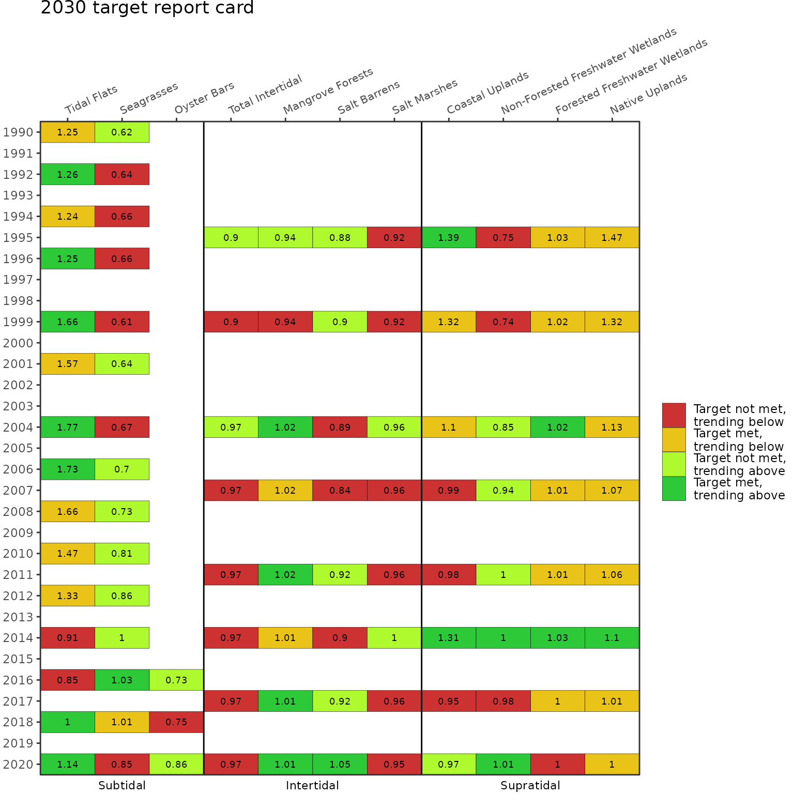
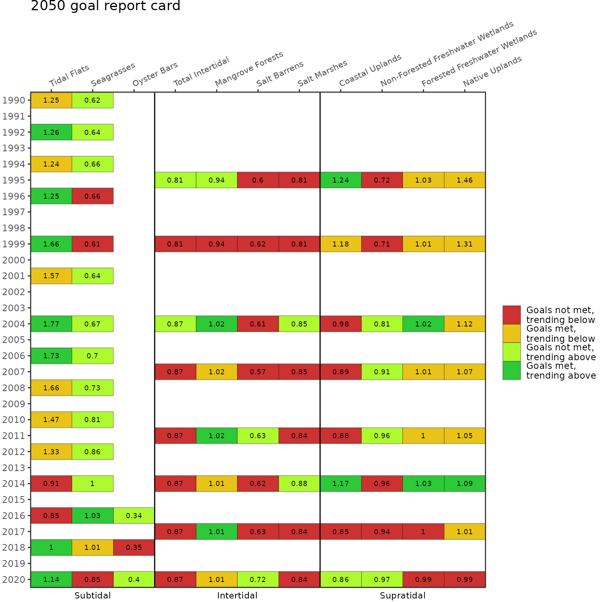
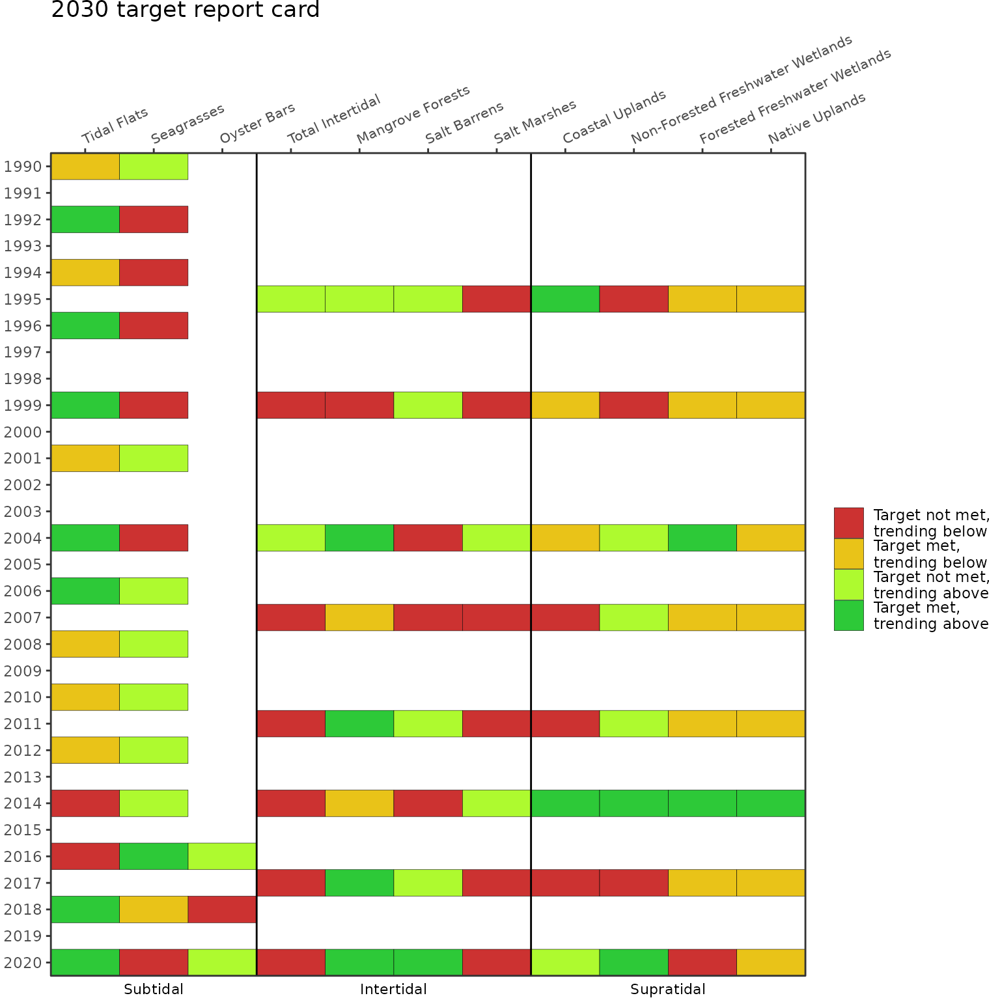

Background
Dashboard: https://shiny.tbep.org/landuse-change/
The habitats of Tampa Bay provide food, shelter, and other important services that support birds, fish, mammals, and invertebrates. Significant habitat alteration and loss has occurred with development activities. To address these challenges, the Habitat Master Plan (2020 Update) [1] provides a set of targets and goals that, if achieved, will provide a healthy and balanced coverage of native habitats in Tampa Bay and its watershed.
This update builds on the previous Habitat Master Plan [2] in several ways. The target and goal setting approach is informed by past changes and over forty years of habitat restoration experience in the region. The approach also identifies what is possible today rather than replicating past ecological conditions and accounts for the potential future effects of sea-level rise, climate change, and development. The Habitat Master Plan defines 10-year (2030) habitat protection and restoration targets and 30-year (2050) goals. Maps of habitat protection and restoration opportunity areas where these targets and goals can be attained are additional products available under the new plan. Please visit https://tbep.org/habitat-master-plan-update/ for additional information.
Datasets
Three internal datasets in tbeptools provide the necessary information to create the Habitat Master Plan report card.
- Summary of annual acreage estimates for each major habitat type in intertidal and supratidal strata.
r acres - Summary of annual acreage estimates for each major habitat type in the subtidal stratam.
r subtacres - A table of targets and goals for each major habitat type, developed in the Habitat Master Plan 2020 update [1] (only select columns shown).
r hmptrgs[, c("Category", "HMPU_TARGETS", "Target2030", "Goal2050")]These datasets are created in the repository https://github.com/tbep-tech/hmpu-workflow and require updates as land use and cover datasets are produced every two to three years by the Southwest Florida Water Management District.
Report Card
An important reporting product for the Habitat Master Plan is a report card that summarizes attainment of targets and goals and evaluates prior trends to identify if coverages are trending above or below the targets or goals. Two functions are provided in tbeptools to create this report card. The anlz_hmpreport() summarizes the above datasets to provide the necessary information for creating the report card. The show_hmpreport() generates the plot for the report card. The latter can be used by itself and the former is only provided if there is a need to view the data behind the report card.
Using the anlz_hmpreport() function summarizes the acreage coverage estimates for each habitat type, compares them to the targets and goals for each year of data, and assesses the coverage trend between year pairs to determine if the changes are trending above or below the targets and goals.
anlz_hmpreport(acres = acres, subtacres = subtacres, hmptrgs = hmptrgs)
#> # A tibble: 146 × 17
#> year metric Acres lacres lyr categ…¹ Target Goal acres…² yeard…³ chang…⁴
#> <chr> <chr> <dbl> <dbl> <dbl> <chr> <dbl> <dbl> <dbl> <dbl> <dbl>
#> 1 1995 Mangr… 14350. 13522. 1990 Inter 15300 15300 828. 5 166.
#> 2 1995 Salt … 479 468 1990 Inter 546 796 11 5 2.2
#> 3 1995 Salt … 4436. 4482. 1990 Inter 4807 5457 -45.8 5 -9.17
#> 4 1995 Total… 19265. 18472. 1990 Inter 21353 23803 793. 5 159.
#> 5 1999 Mangr… 14314. 14350. 1995 Inter 15300 15300 -36.9 4 -9.22
#> 6 1999 Salt … 492 479 1995 Inter 546 796 13 4 3.25
#> 7 1999 Salt … 4442. 4436. 1995 Inter 4807 5457 6.09 4 1.52
#> 8 1999 Total… 19247. 19265. 1995 Inter 21353 23803 -17.8 4 -4.45
#> 9 2004 Mangr… 15612. 14314. 1999 Inter 15300 15300 1298. 5 260.
#> 10 2004 Salt … 488. 492 1999 Inter 546 796 -4.30 5 -0.861
#> # … with 136 more rows, 6 more variables: targetrate <dbl>, goalrate <dbl>,
#> # targetprop <dbl>, goalprop <dbl>, targeteval <dbl>, goaleval <dbl>, and
#> # abbreviated variable names ¹category, ²acresdiff, ³yeardiff, ⁴changerateThe columns are as follows:
- year: Year of the assessment
- metric: Habitat type assessed
- Acres: Coverage estimate for the year
- lacres: Coverage estimate for the previous set of available data
- lyr: Year for the previous set of available data
- category: Strata for the habitat type
- Target: 2030 target for the habitat type from the Habitat Master Plan
- Goal: 2050 goal for the habitat type from the Habitat Master Plan
- acresdiff: Difference in acres for the current year and the previous set of available data
- yeardiff: Difference in years for the current year and the previous set of available data
- changerate: Acreage change per year for the current year relative to the previous set of available data
- targetrate: Annual rate required to achieve the 2030 target
- goalrate: Annual rate required to achieve the 2050 goal
- targetprop: Proportion of target met for the current year
- goalprop: Proportion of goal met for the current year
- targeteval: A number indicating target status of the current year for the report card
- goaleval: A number indicating goal status of the current year for the report card
The important columns in the output are targetprop, goalprop, targeteval, and goaleval. The targetprop and goalprop columns indicate the proportion of the target or goal met for habitat type in the current assessment year. The targeteval and goaleval columns are one of four values, as -1, 0, 0.5, and 1, for each habitat type and year. These numbers define the habitat status for the assessment year:
- -1: target or goal not met, trending below
- 0: target or goal met, trending below
- 0.5: target or goal not met, trending above
- 1: target or goal met, trending above
Report Card
The show_hmpreport() can be used to create the Habitat Master Plan report card. The anlz_hmpreport() function is used internally and does not need to be used separately. The input files are the same.
The plot below shows the report card for the 2030 targets, using typ = "targets". The colors of each cell correspond to the numbers in the targeteval column (or goaleval if typ = "goals") returned by anlz_hmpreport(). The numbers in each cell indicate the proportion of the target from targetprop (or goal from goalprop if typ = "goals") that is met for each habitat type in each assessment year. Note that the creation of datasets to generate the summaries is not continuous each year and varies between the subtidal and inter/supratidal habitat.
show_hmpreport(acres = acres, subtacres = subtacres, hmptrgs = hmptrgs, typ = 'targets')
The 2050 goals report card can be shown using typ = "goals".
show_hmpreport(acres = acres, subtacres = subtacres, hmptrgs = hmptrgs, typ = 'goals')
Finally, the text showing the proportion of the target or goal met each year can be suppressed using text = F.
show_hmpreport(acres = acres, subtacres = subtacres, hmptrgs = hmptrgs, typ = 'targets', text = F)
The report card provides no information on artificial reefs, living shorelines, and hard bottom habitats. These habitats are not assessed in routine data products from the Southwest Florida Water Management District, although targets and goals are provided in the Habitat Master Plan.
References
[1] D. Robison, T. Ries, J. Saarinen, D. Tomasko, C. Sciarrino, Tampa Bay Estuary Program: 2020 Habitat Master Plan Update, Tampa Bay Estuary Program, St. Petersburg, Florida, 2020. https://drive.google.com/file/d/1Hp0l_qtbxp1JxKJoGatdyuANSzQrpL0I/view?usp=drivesdk.
[2] D. Robison, Tampa Bay Estuary Program Habitat Master Plan Update, Tampa Bay Estuary Program, St. Petersburg, Florida, 2010. https://drive.google.com/file/d/13iVkFKFG_EMNGwRWdgPPZfCL5JlatNcr/view?usp=drivesdk.